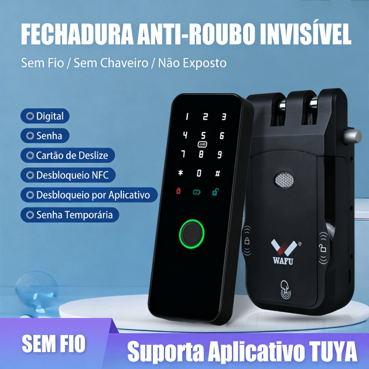
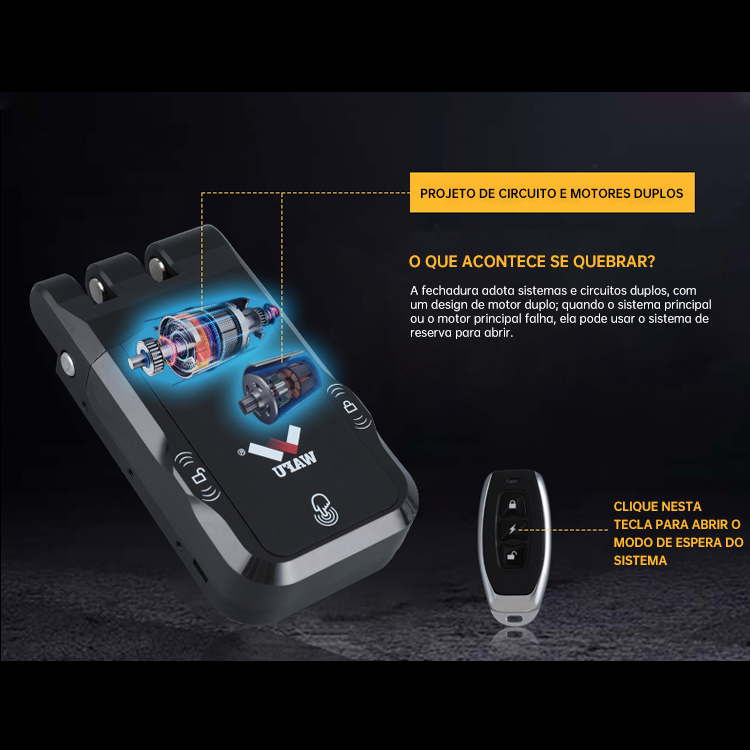
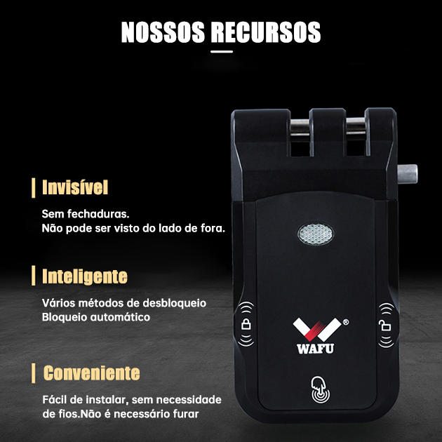
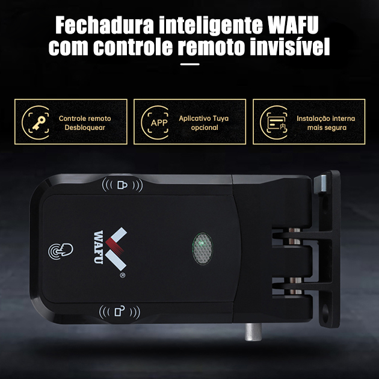
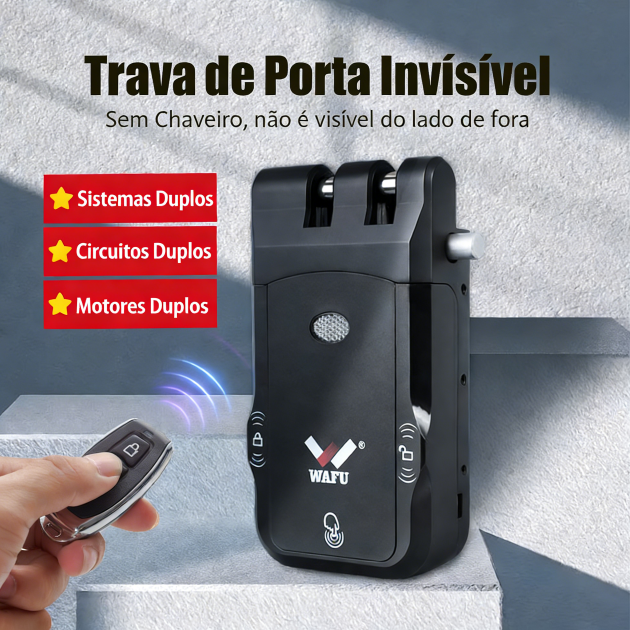
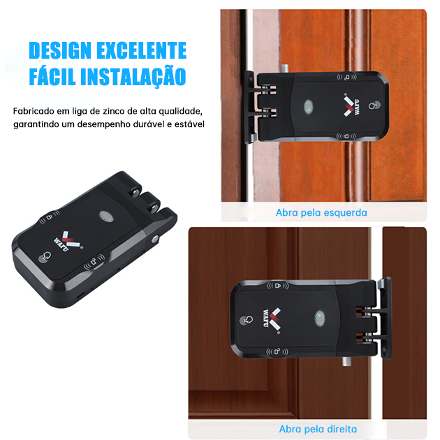
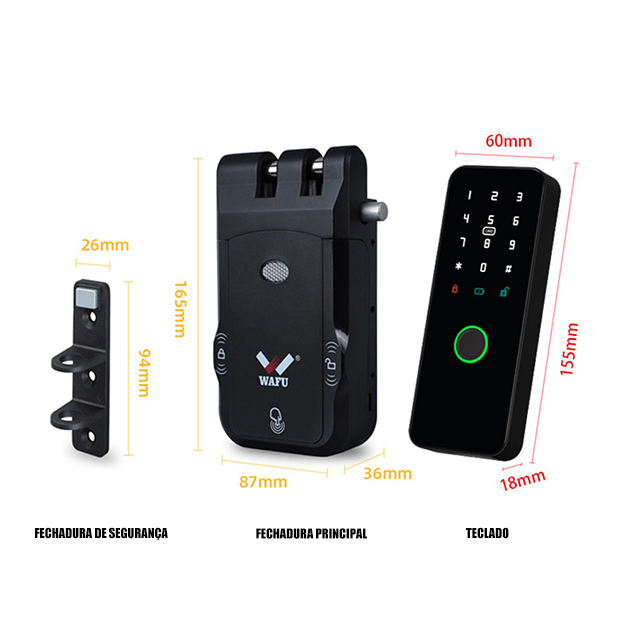
WF-026 Fechadura Oculta Antirroubo
Corpo Monobloco em Liga de Zinco | Sistema Duplo & Motor Duplo | Sucesso na Europa
- Marca / Modelo: WAFU WF-026
- Material: Corpo monobloco em liga de zinco fundido, estilo minimalista moderno
- Métodos de Desbloqueio: Comando remoto, impressão digital, palavra‑passe, NFC, App (opcional)
- Aplicações: Casa, apartamento, escritório, hotel
- Stock Disponível: Preto/Prata × 2‑comandos, ×4‑comandos, + comando Wi‑Fi (8 combinações)
- Personalização: OEM/ODM, autorização de marca, embalagens multilingue
- Certificações: CE/RCC/RoHS
Introdução ao Produto
A falha de um único motor pode bloquear um andar inteiro de apartamentos; distribuidores precisam de uma fechadura oculta com fiabilidade de reserva para mercados da Europa e Médio Oriente. A WF-026 adiciona fail-over dual-motor em sistema duplo à categoria de fechadura remota invisível.
Para Grossistas e Parceiros OEM
- OEM/ODM com autorização de marca e embalagem multilingue
- 8 combinações prontas (preto/prata × 2/4 comandos + versão Wi-Fi) para EUA / UE / Médio Oriente
- Pronta para drop-ship transfronteiriço; certificada CE / RCC / RoHS
- Arquitetura dual como nível premium no seu catálogo de fechaduras invisíveis
Segurança
- Instalação interior oculta sem orifício exterior
- Sistema duplo dual-motor: motor de reserva se o sistema principal falhar
- Desbloqueio multimodo: remoto, impressão digital, palavra-passe, NFC, App
Durabilidade
- Carcaça em liga de zinco fundida com revestimento nano (corrosão ≥ grau 10)
- Autonomia ≥ 2 meses com 4 × pilhas AA
- Concebida para exportação em alto volume para EUA, Europa e Médio Oriente
Conveniência
- Versão remota Wi-Fi para gestores de propriedade
- Taxa de desbloqueio estável para operadores hoteleiros e B&B
- Adequada para casas, apartamentos e arrendamentos de curta duração sem danificar a porta
Apoio a Parcerias
- Saiba mais sobre fechaduras invisíveis mono vs dual
- Upsell a partir de WF-010 / WF-019
- QC de fábrica e termos em grosso: guia de encomendas
Guias Relacionados
WF-026+Keypad Especificações Técnicas Detalhadas
| Atributo | Especificação |
|---|---|
| Número do Modelo | WF-026+Keypad |
| Marca | WAFU |
| Local de Origem | Guangdong, China |
| Opções de Armazenamento de Dados | Nuvem |
| Grau de Segurança do Cilindro | Grau C |
| Rede | Bluetooth |
| Aplicativos Inteligentes | TT Lock App, Tuya App |
| Material | Liga de Zinco + ABS |
| Opções de Cor | Preto, Cinza |
| Dimensões | 165 × 87 × 36 mm, 155 × 60 × 18 mm |
| Peso | 1,4 kg |
| Tipo de Porta | Porta de Madeira, Porta de Aço, Porta de Aço Inoxidável, Porta de Alumínio, Porta de Vidro |
| Fonte de Alimentação | 4 × Pilhas AA, 3 × Pilhas AAA (não incluídas) |
| Método de Transmissão | Sem Fio |
| Frequência | 433MHz (±500KHz) |
| Alcance de Operação | Até 20 m (sem obstáculos) |
| Uso/Aplicações | Casa, Hotel, Escritório, Apartamento, Vila, etc. |
| Tipos de Porta Compatíveis | Porta de Vidro, Porta Metálica, Porta de Madeira, etc. |
| Tamanho da Embalagem | 25 × 21 × 11 cm |
| Peso Bruto | 1,350 kg |
| Unidades de Venda | Item único |
Detalhes do Produto
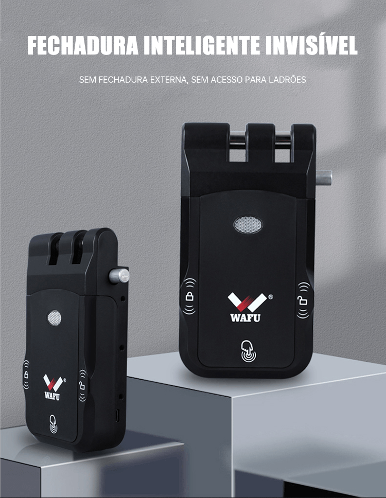
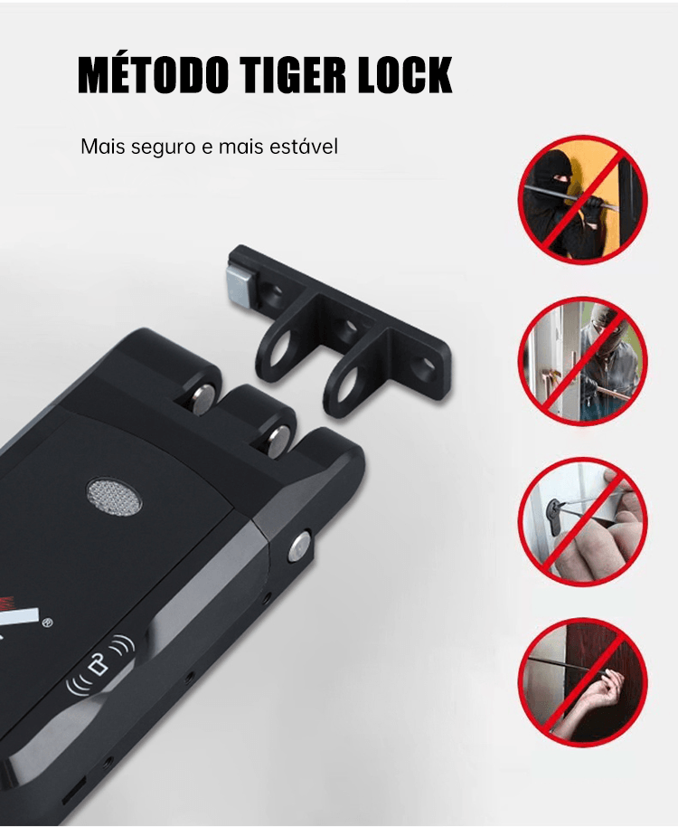
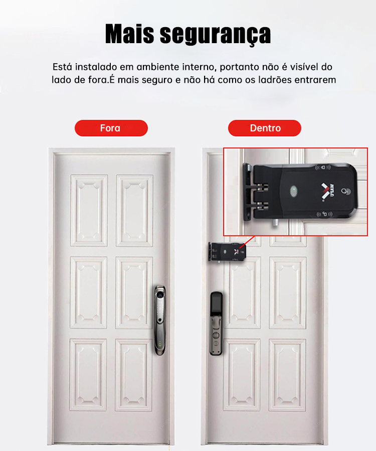
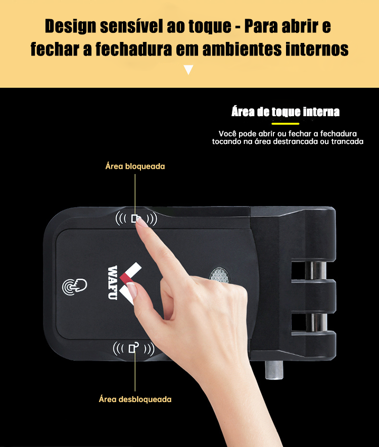
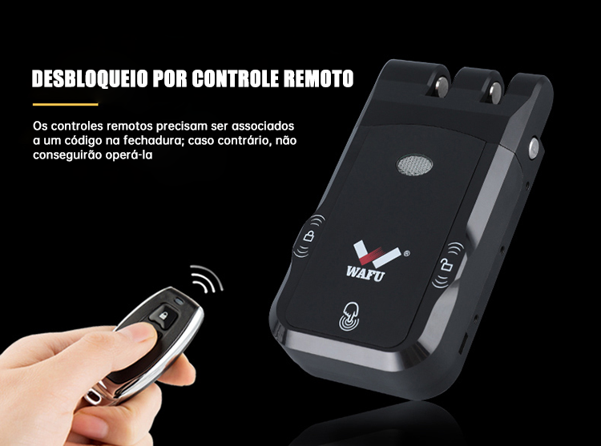
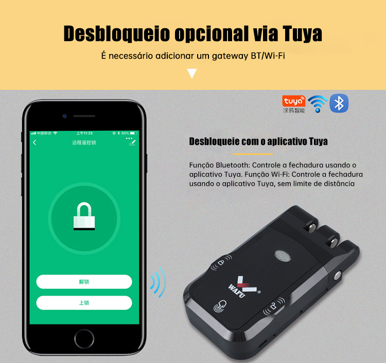
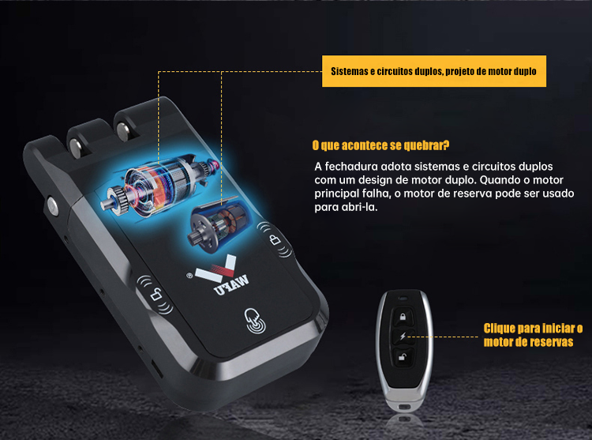
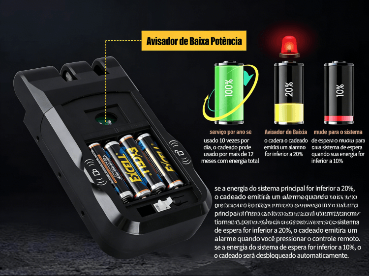
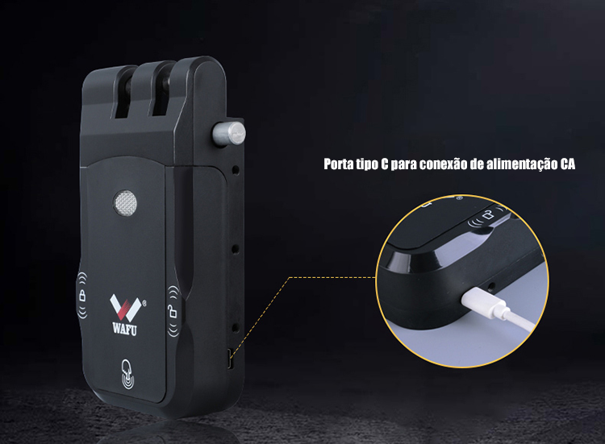
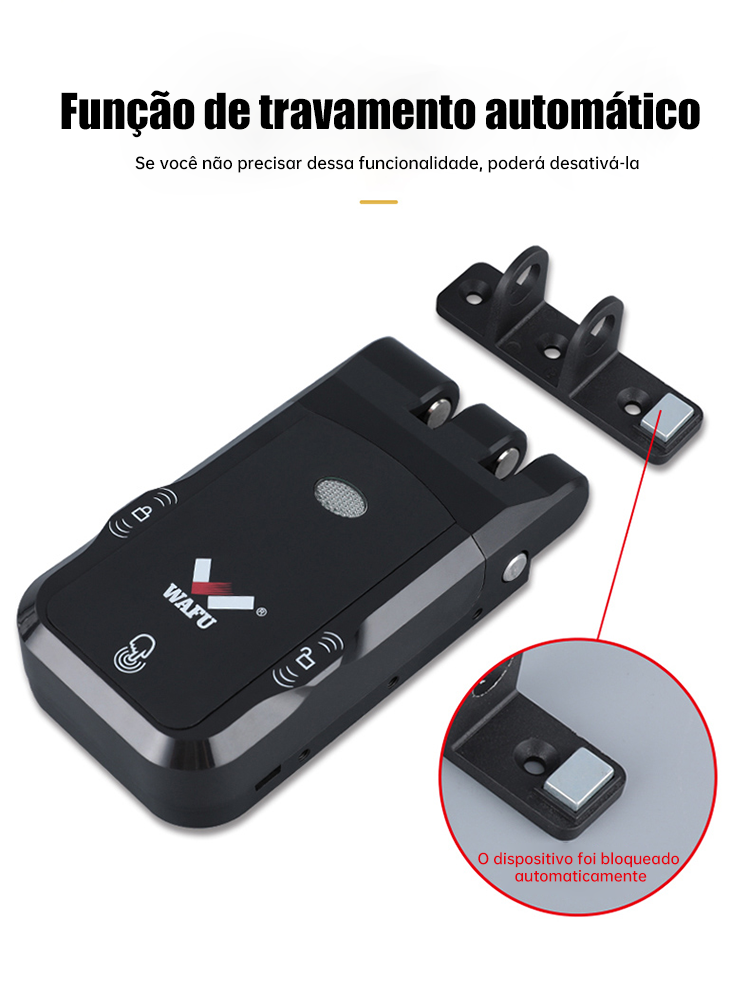
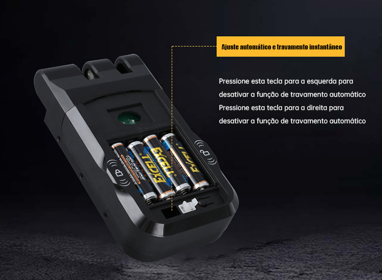
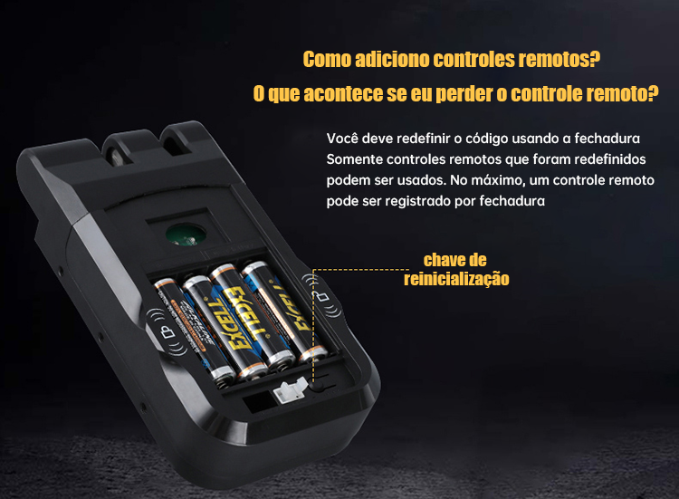
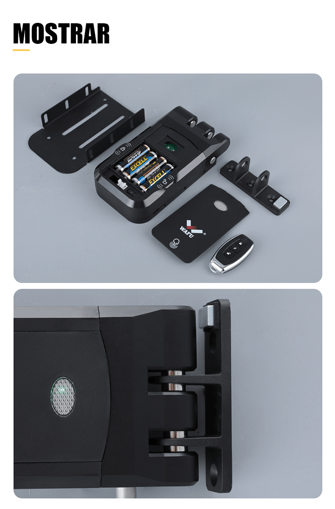
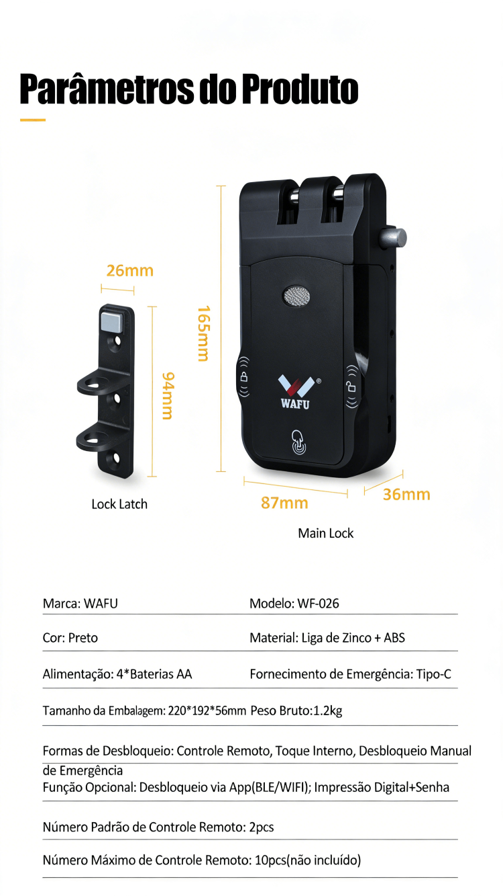
Apresentação de Produtos
Outras fechaduras mais vendidas

Contacte-nos
Quer necessite de branding OEM ou personalização funcional ODM, a nossa equipa de projeto entrará em contacto consigo dentro de 24 horas após o envio do formulário e fornecerá uma solução completa e personalizada de fechadura inteligente.
Endereço
2F, Edifício 6, Parque Eco-Industrial Sha-Yi, 496 Chuangcheng
Rd,Subdistrito de Shajing, Distrito de Bao’an, Shenzhen, China
Telefone
+86 15914193183 (mesmo número para WhatsApp)
wafutechnology@outlook.com
wafutechnology@gmail.com
Consulta Gratuita

WhatsApp:
+86 15914193183
Telefone: +86 15914193183
Email: wafutechnology@gmail.com